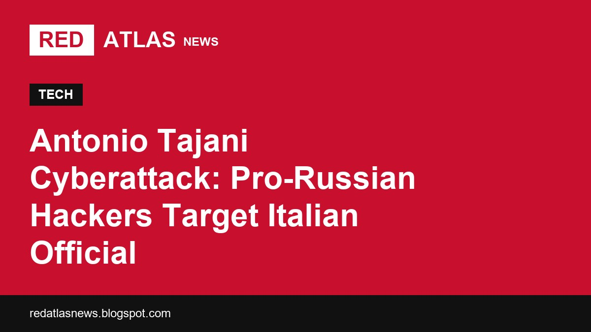

Italian officials say pro-Russian hackers leaked Foreign Minister Antonio Tajani's personal information online following Italy's steadfast support for Ukraine.
Italian Foreign Minister Antonio Tajani announced on Saturday, November 7, 2026, that cybercriminals have leaked his personal data on the dark web, leaving him and his family exposed to ongoing threats and harassment. Italian Prime Minister Giorgia Meloni directly attributed the breach to pro-Russian actors, linking the antonio tajani cyberattack pro russian hackers executed to Italy's resolute political, humanitarian, and military support for Ukraine.
In a public statement shared on the social media platform X, Tajani disclosed that sensitive personal details had been circulating online for multiple days. The exposed information was published on the dark web—a concealed segment of the internet that requires specialized software to access and is not indexed by standard search engines, according to reporting by BBC News.
Tajani emphasized that the cyberthreat remains active, as individuals involved in the operation continue to solicit further private data. As reported by Al Jazeera and DW, Tajani stated in his online post:
"For days, cybercriminals have been spreading my personal data on the dark web and seeking other information, in fact exposing me and my family to new threats and intimidation."
The foreign minister, who also serves as Italy's deputy prime minister, noted that those responsible were actively offering monetary rewards to gain deeper access into his private life and that of his relatives. Al Jazeera reported that Tajani added:
"They are also targeting my family; they are willing to pay for more details about me and my loved ones."
Despite the escalation of threats, Tajani insisted that the breach would not disrupt his official duties or alter the Italian government's foreign policy course.
"My response is very simple: I will not be intimidated in any way,"Tajani stated, according to reporting from Al Jazeera.
Italian authorities have directly tied the timing and nature of the cyberattack to the country's geopolitical alignment. Since Russia launched its invasion of Ukraine nearly five years ago, Italy—alongside fellow European Union and NATO member states—has consistently supplied humanitarian assistance and military hardware to assist Ukrainian defense forces, DW reported.
Tajani asserted that Italy's stance on the conflict was the explicit catalyst for the targeted digital operation. According to BBC News, Tajani wrote on social media:
"Our position on Ukraine is the political reason I have been targeted."He elaborated on the ideological motivation behind the breach, stating:
"Defending the freedom of a sovereign state, taking a clear stand in support of a nation's democracy and independence, is dangerous in the eyes of these criminal entities."
Beyond foreign policy motives, Tajani suggested that the cyber offensive might also represent a retaliatory reaction to ongoing efforts by the Italian government to fortify and upgrade the Foreign Ministry's digital security infrastructure, Al Jazeera reported.
Italian Prime Minister Giorgia Meloni responded swiftly to the breach, offering her full backing to Tajani while openly pointing the finger at pro-Russian networks. According to reports from BBC News and DW, Meloni characterized the illicit dissemination of state officials' private details as an unacceptable violation of security.
In an official statement cited by DW, ABC News, and Al Jazeera, Meloni declared the leak to be
"a matter of grave concern that must be addressed with the utmost determination."BBC News also reported that Meloni extended her
"full solidarity"to the foreign minister amid the campaign of intimidation.
As of Saturday, government authorities in Moscow have not publicly responded to or addressed the specific allegations made by Italian leadership, BBC News reported.
The incident has also sparked domestic political tension within Italy. According to BBC News, Prime Minister Meloni expressed distinct concern over the
"circulation of false images"that she stated were being distributed by members of Italy's political opposition. Meloni did not elaborate further on the exact contents or origin of the images in question.
The security breach involving Tajani is not an isolated event. Security analysts and European officials view the incident within a broader pattern of escalated hybrid operations taking place across the continent, according to reports by DW, ABC News, and Al Jazeera.
In recent weeks, European countries have faced a wave of disruptions. As documented by ABC News and DW, these include a string of widespread hoax bomb threats that forced multiple commercial airlines to cancel or reroute flights within the European Union block. Additionally, security alerts have been triggered at news broadcasters and media outlets.
Furthermore, critical infrastructure and supply networks have come under pressure. Recent incidents detailed by DW and Al Jazeera include targeted attacks on supermarket refrigeration systems, disruptions to local food supplies, unauthorized drone incursions over restricted spaces, and acts of physical sabotage inside NATO territories.
In the wake of the dark web leak, Italian officials are prioritizing both domestic technical reinforcement and international intelligence collaboration. Tajani stated that the Italian Foreign Ministry is actively taking the cyberthreats seriously and taking concrete steps to prevent further data compromises, Al Jazeera reported.
Tajani explained that Italian authorities are coordinating their security response with international partners and allied nations to combat cross-border cybercrime networks, according to Al Jazeera. DW and ABC News reported that Tajani vowed to reinforce the country's institutional security posture moving forward.
According to DW and ABC News, Tajani emphasized his commitment to institutional defense, stating:
"I will continue working to defend my ministry, and Italy, and I will further strengthen the ties and cooperation to protect ourselves together."
Italian Foreign Minister and Deputy Prime Minister Antonio Tajani was targeted by cybercriminals who stole his personal data and published it on the dark web, while also seeking details about his family.
Italian Prime Minister Giorgia Meloni explicitly blamed pro-Russian hackers for the cyberattack and data leak, though Moscow has not publicly responded to the allegations.
Antonio Tajani stated he was targeted due to Italy's firm support for Ukraine's sovereignty and democracy, as well as recent efforts to strengthen the Italian Foreign Ministry's digital defenses.
Recent hybrid incidents across Europe reported by outlets like DW and Al Jazeera include hoax bomb threats causing flight diversions, security alerts at broadcasters, attacks on supermarket refrigeration systems, drone incursions, and sabotage in NATO territories.
This report was prepared by the Red Atlas News news desk based on reporting from ABC News, Al Jazeera, BBC News, DW.